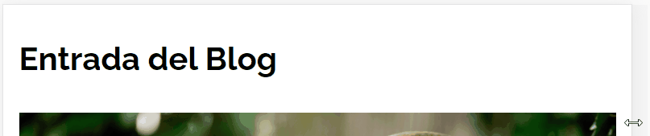
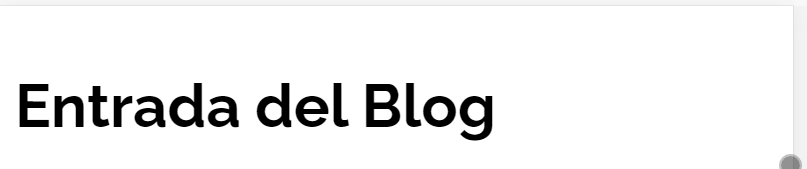

Se puede traducir como pequeños ajustes, puede variar entre tamaño de imagenes, o en las fuentes.
se trata de considerar esos pequeños detalles que pueden mejorarse, con pequeños detalles a la experiencia de usuario.
Sin Tiny Tweaks
Con Tiny Tweaks
